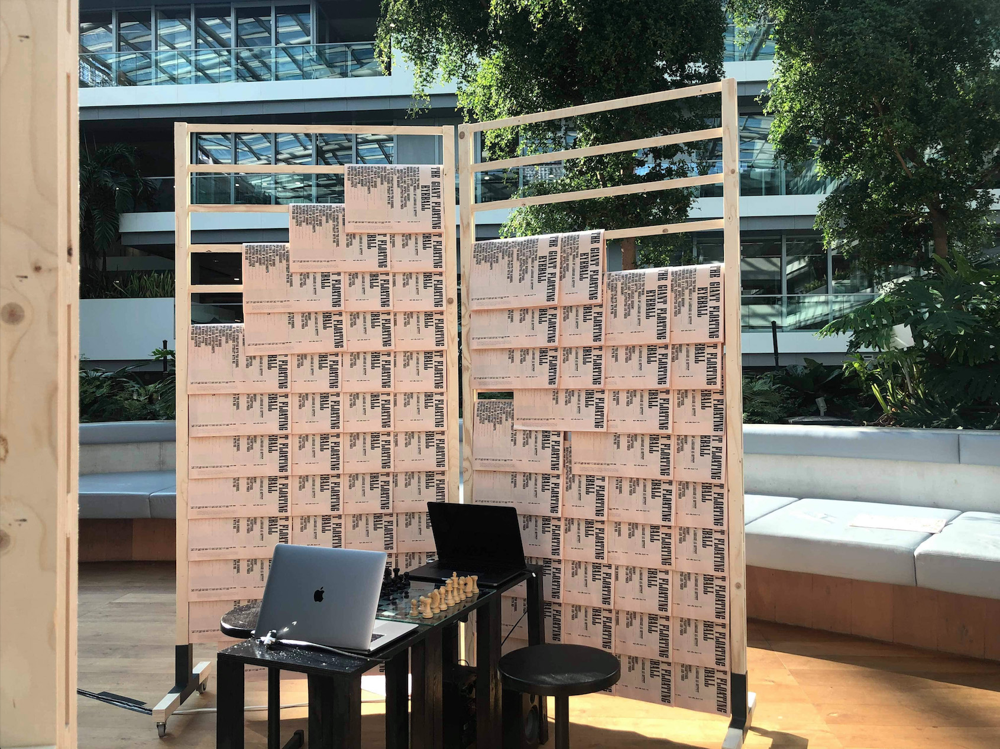

THE BOX—the box fulfils four missions: to protect the cultural object from deterioration, to protect the object from terrorist groups, to prepare the object for emergency transportation and to provide the public online inspection of the object, in case the physical one is not allowed.
1.

2.
3.
4.

5.

6.
7.

8.

Our 3D Heritage
In 2014, after being captured by ISIL (Islamic State of Iraq and the Levant), the city of Mosul suffered from multiple destructions of its several significant cultural heritage. Amongst these were the Al-Qubba Husseiniya Mosque, the Green Mosque, the Hamu Al-Qadu Mosque, the tombs of prophet Daniel and the shrine of Imam Awn al-Din, to name a few. After these alarming instances, a movement emerged rapidly — the use of various 3D scanning technologies to reconstruct lost cultural heritage. 3D scanning, however, is not a new invention. It has been used in various applications in the past, mainly in archaeological researches, yet only in recent years has it been considered a tool for the preservation of culture, proven by its widespread popularity in apps, softwares and end-users’ devices for both amateurs and professionals. However, some crucial questions arise from the use of this technology: What will happen to the value of the culture object when "comforted" by the availability of their digital replicas? Will 3D scanning technology help to strengthen appreciation of multiple cultures or will it only strengthen the selective ones? What will change in the role of museums when it comes to the possession and dispossession of the historically “borrowed” objects? Where is the aura of the objects?
The project “Our 3D Heritage” explores the emerging movement of 3D scanning and its impact on the realm of cultural preservation.
The separated hair can last forever whereas the body will not. Moreover, the separated hair will no longer grow, it embodies as materialized time an epoch that is absolutely past. Its temporal semantics privileged and still privilege the hair cut in the rites de passage. The cut edge of the hair in the material medium of remembrance marks the act of remembrance as the very moment when its natural status was transformed into a cultural status, and when the present presence of the body is anticipated as a future absence.
—Christine Holm. 'Sentimental Cuts: Eighteenth-Century Mourning Jewelry with Hair.' Eighteenth-Century Studies. Volume 38, Number 1. Fall 2004. 140.
1.

2.
3.
4.
5.

6.
7.

8.
9.
The New Grief: An Online Memorial
It was a Vietnamese memorial website. The background was dark. There were several columns of categories. Some bright neon cursive letters were passing by in a looping manner, stating all sorts of wishes. Some were cheerful but others were mournful. It seems ridiculous to think about moving your death online but when you look at the huge database of deaths on nhomai.vn, you can easily tell how seriously engaged the participants were. They said it was a positive alternative to the culture of grieving. It was “the only way I could mourn for my loved ones when I’m almost half a globe away".
Online identity is a state of being. It is one’s alter ego, one’s timeline, one’s style, one’s belief, one’s charm, one’s freedom and one’s nation. A person's online identity will eventually formulate itself and grow out of that person’s supervision and accumulate more things beyond. But what will happen to this online legacy? What will happen to the online after-life? Or is the online already an after-life?
The New Grief is an app facilitating a new ritual of grief. In combination with the use of one’s own hair as a physical anchor, the app acts as an access to the resting place of the people who will have no longer seen the purpose of physical manifestation of their death. The only artifact left behind is the hair, arranged into a unique combination of code that allows others to scan to access the memorial space. The service embedded with the app will allow people to sign up and reserve a space for their future death, all online.
1. View of the installation 'I’m Frightened, Angry, Disappointed, Hopeful, Compassion And Proud About The Economy' ready for the opening, with Scene Peng, 2019.
1.
2.

3.
4.

5.
I’m Frightened, Angry, Disappointed, Hopeful, Compassion And Proud About The Economy
In recent years, the use of algorithms has been propagated for different purposes, one includes the prediction of financial crisis in a nation's economy. Often than not, these computations are related to digit-type/number databases, such as the number of population, the number of voters, the number of unemployments, the number of establishments, etc. but scarcely are the relationship between algorithms and feelings. This project is trying to find this correlation, in the form of an interactive performance of the game chess.
Chess is a game of both the computational-mind and the emotional-body. When a player plays, he stays as silent as a humming processor. When a player wins, he exerts a grin of triumph. Each move made is a tick of a feeling inside. Chess is a game of prediction, the moves are not stand-alone, they follow each other to reach higher position of winning. The more coherent are the moves, the more the chance of success. Chess is a race of two calculating armies and is therefore the metaphor for our society’s algorithmic tendencies. How does it feel like to hear the sound our own calculation while playing chess?
The final artwork is a chess board set up, with two laptops on the side connected with speakers, and two chairs for the players. The laptops’ webcams track the movement of the hands as they shuffle around, think, hesitate and decide. The movements are then translated through a previously trained A.I model, who interprets and outputs synthesized sounds to the speakers. Together the four players, both machine and human, compose a non-stop ambient piece that reflects the atmosphere of the game, be it "Frightening, Wrathful, Disappointing, Hopeful, Compassing Or Full of Pride”.
In collaboration with Scene Peng.
Part of the exhibition The Giant Floating Eyeball, with Matthias Kreutzer, Maarten Cornel and James Grave.